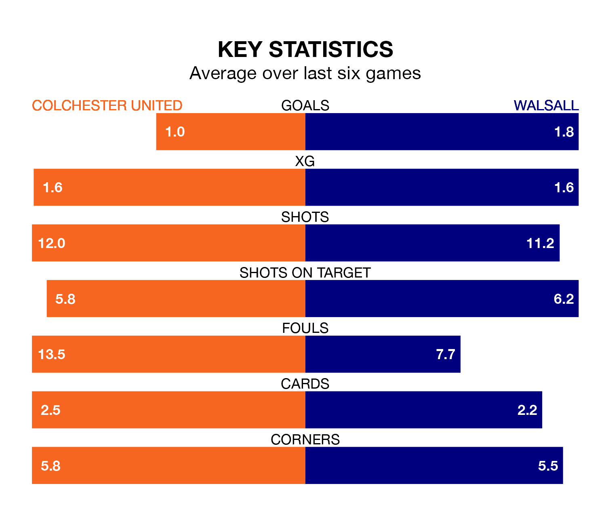

Colchester United face Walsall at the JobServe Community Stadium on Saturday looking to secure a first win in seven EFL League Two games.
The U's have lost two and drawn four matches since they last earned three points – against Morecambe on January 27.
They face a Walsall side who have won four and drawn one over that time.
Colchester are 23rd in the table after 35 games, of which they have won eight and drawn eight, earning 32 points.
Walsall are 15 places ahead of United in eighth, with 15 wins and 10 draws putting them on 55 points.
In the last 10 years, Colchester and Walsall have played each other on 13 occasions. Colchester won two of them, Walsall four, and they drew seven times.
On average, the U's scored 0.9 goals and the Saddlers 1.3 in those matches.
Their last meeting was on September 2, when Walsall won 1-0 at home.
With 45 goals in 35 games so far this season, the U's are scoring at below the league average rate with 1.3 goals per game. And they are conceding more than average, letting in 64 goals at a rate of 1.8 per game.
The Saddlers, meanwhile, are average scorers, with 1.5 goals per game. They have conceded 1.4 goals per game.
Colchester's last match was on March 9, a 2-0 loss against Barrow.
Walsall drew 1-1 with Barrow last time out, on Tuesday, with Rollin Menayese on the scoresheet.
Updated: 15:10 (UTC), 15/03/24